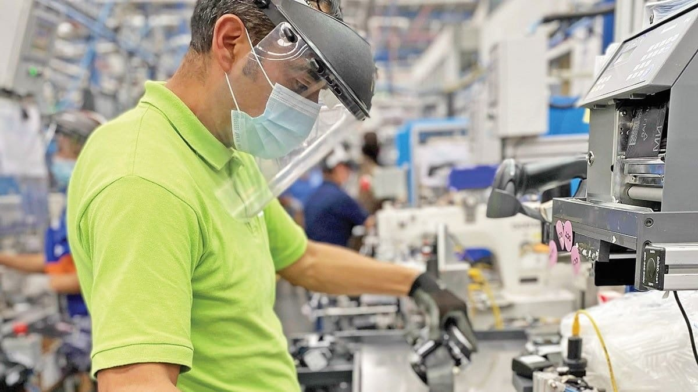

Auditoría ISO 9001: checklist para fábricas

La auditoría ISO 9001 es uno de los procesos más importantes para cualquier fábrica que busque demostrar la calidad de sus operaciones y cumplir con estándares internacionales. Esta norma, centrada en los sistemas de gestión de calidad, exige que las organizaciones dispongan de evidencias claras, trazabilidad completa y un enfoque de mejora continua. Superar una auditoría con éxito no solo abre la puerta a certificaciones, sino que refuerza la confianza de clientes y socios comerciales.
En este artículo analizaremos en detalle qué es una auditoría ISO 9001, por qué es esencial para las fábricas, qué debe incluir un checklist eficaz, los errores más comunes que conviene evitar y cómo herramientas digitales como Solved facilitan y aceleran el proceso.
Qué es una auditoría ISO 9001
La auditoría ISO 9001 es un proceso sistemático que busca comprobar que una organización cumple con los requisitos de la norma ISO 9001. Esta norma internacional establece los criterios para un sistema de gestión de calidad (SGC) y se aplica a cualquier empresa, independientemente de su tamaño o sector.
El objetivo de la auditoría es evaluar si la empresa:
- Cumple con los requisitos documentados en la ISO 9001.
- Aplica de manera consistente sus procesos de gestión de calidad.
- Genera evidencias claras de trazabilidad y control.
- Mantiene un ciclo de mejora continua.
Para las fábricas, este proceso es crítico, ya que los clientes cada vez exigen más garantías de calidad y cumplimiento normativo.

Importancia de la auditoría ISO 9001 en fábricas
Adoptar la ISO 9001 es mucho más que obtener un certificado colgado en la pared. La auditoría es el mecanismo que demuestra que la empresa realmente gestiona la calidad de forma estructurada.
Entre sus beneficios destacan:
- Confianza de clientes y proveedores: certifica que los procesos están bajo control.
- Acceso a nuevos mercados: muchas licitaciones y contratos exigen ISO 9001 como requisito básico.
- Mejora continua: la auditoría obliga a revisar y perfeccionar los procesos.
- Cumplimiento regulatorio: garantiza evidencias para inspecciones y auditorías oficiales.
- Eficiencia operativa: detectar no conformidades internas permite ahorrar costes.
Una auditoría ISO 9001 exitosa refuerza la competitividad de cualquier fábrica.
Checklist esencial para una auditoría ISO 9001
Preparar un checklist es la mejor forma de asegurar que la fábrica está lista para superar la auditoría. A continuación, presentamos los puntos clave que debe incluir un checklist para ISO 9001.
1. Documentación del sistema de gestión de calidad
- Manual de calidad actualizado.
- Procedimientos y políticas aprobadas.
- Registros documentados de cada proceso.
2. Revisión por la dirección
- Evidencias de reuniones de dirección.
- Seguimiento de objetivos de calidad.
- Evaluación de riesgos y oportunidades.
3. Control de procesos
- Procedimientos claros de producción.
- Registros de control de calidad en planta.
- Evidencias de seguimiento de parámetros críticos.
4. Competencia y formación del personal
- Planes de formación.
- Registros de capacitaciones realizadas.
- Evaluaciones de competencias técnicas.
5. Control de proveedores
- Listado de proveedores homologados.
- Procedimientos de evaluación y reevaluación.
- Evidencias de inspecciones de materia prima.
6. Trazabilidad de productos
- Registros de lotes de producción.
- Procedimientos de identificación y etiquetado.
- Capacidad de rastrear un producto de inicio a fin.
7. Acciones correctivas y preventivas
- Procedimiento para gestionar no conformidades.
- Registros de acciones correctivas ejecutadas.
- Análisis de eficacia de medidas aplicadas.
8. Satisfacción del cliente
- Encuestas de satisfacción.
- Registros de reclamaciones y cómo se resolvieron.
- Indicadores de fidelización y repetición de pedidos.
Este checklist es la base para cualquier auditoría ISO 9001 y debe personalizarse según la realidad de cada fábrica.
Errores más comunes en una auditoría ISO 9001
Muchas fábricas tropiezan con los mismos problemas durante la auditoría. Los errores más habituales son:
- Registros incompletos: datos faltantes o sin evidencias claras.
- Procesos no actualizados: procedimientos obsoletos que no reflejan la práctica real.
- Desconocimiento del personal: operarios que no saben explicar procesos básicos.
- Falta de trazabilidad: imposibilidad de seguir un lote desde la materia prima hasta el cliente final.
- Acciones correctivas sin seguimiento: medidas aplicadas sin comprobar su eficacia.
Evitar estos errores requiere preparación, cultura de calidad y un sistema digital que facilite la trazabilidad.
Cómo se diferencia una auditoría ISO 9001 de otras normas
Aunque todas las normas internacionales comparten un enfoque en la mejora continua, la auditoría ISO 9001 tiene particularidades frente a otras auditorías:
- Frente a ISO 14001, se centra en calidad, no en medio ambiente.
- Frente a ISO 22000, su foco es transversal, aplicable a cualquier sector, no solo alimentación.
- Frente a IFS y BRC, es más flexible, pero igualmente exige evidencias robustas.
Esto hace que ISO 9001 sea la base de cualquier sistema de gestión de calidad en fábricas.
Cómo digitalizar la auditoría ISO 9001
El mayor reto para muchas empresas no es cumplir con los requisitos, sino demostrarlo de forma rápida y eficaz. Aquí es donde la digitalización marca la diferencia.
Un software especializado permite:
- Checklists digitales que sustituyen al papel y Excel.
- Registro de evidencias en tiempo real con fotos y vídeos desde móvil o tablet.
- Dashboards automáticos que muestran el estado de auditorías y no conformidades.
- Asignación automática de acciones correctivas a responsables.
- Integración con ERP, MES y GMAO, evitando duplicaciones de datos.
Digitalizar la auditoría reduce tiempos, elimina errores manuales y asegura trazabilidad total.
Cómo Solved facilita la auditoría ISO 9001
La plataforma Solved está diseñada para ir más allá de un simple checklist. Sus funcionalidades permiten que cualquier fábrica esté preparada para superar una auditoría ISO 9001 sin complicaciones:
- Checklists personalizables según procesos y áreas de la planta.
- Registro inmediato de incidencias y hallazgos con evidencias digitales.
- Alertas en tiempo real para no conformidades críticas.
- Dashboards que muestran patrones y tendencias de calidad.
- Historial auditable completo, listo para presentar a certificadoras.
Gracias a Solved, las fábricas reducen hasta un 70% el tiempo de preparación para auditorías, eliminan duplicaciones de registros y fortalecen la cultura de calidad.
Conclusión
Superar una auditoría ISO 9001 no es solo una obligación, sino una oportunidad para mejorar procesos, reducir costes y reforzar la confianza de clientes y proveedores. Contar con un checklist estructurado asegura que la fábrica esté preparada, pero la clave está en digitalizar la gestión para ganar eficiencia y trazabilidad.
Con Solved, las fábricas no solo cumplen los requisitos de la norma, sino que transforman las auditorías en un proceso continuo de mejora y competitividad.
¿Quieres simplificar tu próxima auditoría ISO 9001 y reducir hasta un 70% el tiempo de preparación? Solicita una demo de Solved y descubre cómo digitalizar tu sistema de calidad.